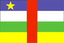
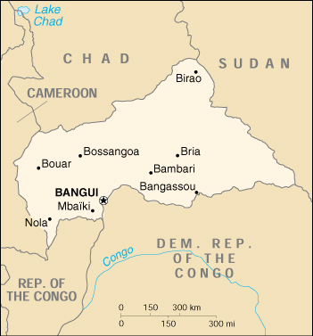

{kind=link}


| Central African Republic |  |
|
|  | |
| Introduction |
Background: The former French colony of Ubangi-Shari became the Central African Republic upon independence in 1960. After three tumultuous decades of misrule - mostly by military governments - a civilian government was installed in 1993.
| Geography |
Location: Central Africa, north of Democratic Republic of the Congo
Geographic coordinates: 7 00 N, 21 00 E
Map references: Africa
Area:
total:
622,984 sq km
land:
622,984 sq km
water:
0 sq km
Area - comparative: slightly smaller than Texas
Land boundaries:
total:
5,203 km
border countries:
Cameroon 797 km, Chad 1,197 km, Democratic Republic of the Congo 1,577 km, Republic of the Congo 467 km, Sudan 1,165 km
Coastline: 0 km (landlocked)
Maritime claims: none (landlocked)
Climate: tropical; hot, dry winters; mild to hot, wet summers
Terrain: vast, flat to rolling, monotonous plateau; scattered hills in northeast and southwest
Elevation extremes:
lowest point:
Oubangui River 335 m
highest point:
Mont Ngaoui 1,420 m
Natural resources: diamonds, uranium, timber, gold, oil, hydropower
Land use:
arable land:
3%
permanent crops:
0%
permanent pastures:
5%
forests and woodland:
75%
other:
17% (1993 est.)
Irrigated land: NA sq km
Natural hazards: hot, dry, dusty harmattan winds affect northern areas; floods are common
Environment - current issues: tap water is not potable; poaching has diminished its reputation as one of the last great wildlife refuges; desertification; deforestation
Environment - international agreements:
party to:
Biodiversity, Climate Change, Desertification, Endangered Species, Nuclear Test Ban, Ozone Layer Protection, Tropical Timber 94
signed, but not ratified:
Law of the Sea
Geography - note: landlocked; almost the precise center of Africa
| People |
Population:
3,512,751
note:
estimates for this country explicitly take into account the effects of excess mortality due to AIDS; this can result in lower life expectancy, higher infant mortality and death rates, lower population and growth rates, and changes in the distribution of population by age and sex than would otherwise be expected (July 2000 est.)
Age structure:
0-14 years:
43% (male 768,550; female 757,710)
15-64 years:
53% (male 909,463; female 946,083)
65 years and over:
4% (male 58,224; female 72,721) (2000 est.)
Population growth rate: 1.77% (2000 est.)
Birth rate: 37.52 births/1,000 population (2000 est.)
Death rate: 18.44 deaths/1,000 population (2000 est.)
Net migration rate: -1.42 migrant(s)/1,000 population (2000 est.)
Sex ratio:
at birth:
1.03 male(s)/female
under 15 years:
1.01 male(s)/female
15-64 years:
0.96 male(s)/female
65 years and over:
0.8 male(s)/female
total population:
0.98 male(s)/female (2000 est.)
Infant mortality rate: 106.69 deaths/1,000 live births (2000 est.)
Life expectancy at birth:
total population:
44.02 years
male:
42.26 years
female:
45.84 years (2000 est.)
Total fertility rate: 4.95 children born/woman (2000 est.)
Nationality:
noun:
Central African(s)
adjective:
Central African
Ethnic groups: Baya 34%, Banda 27%, Sara 10%, Mandjia 21%, Mboum 4%, M'Baka 4%, Europeans 6,500 (including 1,500 French)
Religions:
indigenous beliefs 24%, Protestant 25%, Roman Catholic 25%, Muslim 15%, other 11%
note:
animistic beliefs and practices strongly influence the Christian majority
Languages: French (official), Sangho (lingua franca and national language), Arabic, Hunsa, Swahili
Literacy:
definition:
age 15 and over can read and write
total population:
60%
male:
68.5%
female:
52.4% (1995 est.)
| Government |
Country name:
conventional long form:
Central African Republic
conventional short form:
none
local long form:
Republique Centrafricaine
local short form:
none
former:
Central African Empire
abbreviation:
CAR
Data code: CT
Government type: republic
Capital: Bangui
Administrative divisions: 14 prefectures (prefectures, singular - prefecture), 2 economic prefectures* (prefectures economiques, singular - prefecture economique), and 1 commune**; Bamingui-Bangoran, Bangui**, Basse-Kotto, Gribingui*, Haute-Kotto, Haute-Sangha, Haut-Mbomou, Kemo-Gribingui, Lobaye, Mbomou, Nana-Mambere, Ombella-Mpoko, Ouaka, Ouham, Ouham-Pende, Sangha*, Vakaga
Independence: 13 August 1960 (from France)
National holiday: National Day, 1 December (1958) (proclamation of the republic)
Constitution: passed by referendum 29 December 1994; adopted 7 January 1995
Legal system: based on French law
Suffrage: 21 years of age; universal
Executive branch:
chief of state:
President Ange-Felix PATASSE (since 22 October 1993)
head of government:
Prime Minister Anicet Georges DOLOGUELE (since 4 January 1999)
cabinet:
Council of Ministers
elections:
president elected by popular vote for a six-year term; election last held 19 September 1999 (next to be held NA 2005); prime minister appointed by the president
election results:
Ange-Felix PATASSE reelected president; percent of vote - Ange-Felix PATASSE 51.63%, Andre KOLINGBA 19.38%, David DACKO 11.15%
Legislative branch:
unicameral National Assembly or Assemblee Nationale (109 seats; members are elected by popular vote to serve five-year terms; note - there were 85 seats in the National Assembly before the 1998 election)
elections:
last held 22-23 November and 13 December 1998 (next to be held NA 2003)
election results:
percent of vote by party - MLPC 43%, RDC 18%, MDD 9%, FPP 6%, PSD 5%, ADP 4%, PUN 3%, FODEM 2%, PLD 2%, UPR 1%, FC 1%, independents 6%; seats by party - MLPC 47, RDC 20, MDD 8, FPP 7, PSD 6, ADP 5, PUN 3, FODEM 2, PLD 2, UPR 1, FC 1, independents 7; note - results of election are being contested
note:
the National Assembly is advised by the Economic and Regional Council or Conseil Economique et Regional; when they sit together they are called the Congress or Congres
Judicial branch: Supreme Court or Cour Supreme, judges appointed by the president; Constitutional Court, judges appointed by the president
Political parties and leaders: Alliance for Democracy and Progress or ADP [leader NA]; Central African Democratic Assembly or RDC [Andre KOLINGBA]; Civic Forum or FC [Gen. Timothee MALENDOMA]; Democratic Forum or FODEM [Charles MASSI]; Liberal Democratic Party or PLD [Nestor KOMBO-NAGUEMON]; Movement for Democracy and Development or MDD [David DACKO]; Movement for the Liberation of the Central African People or MLPC [the party of the president, Ange-Felix PATASSE]; Patriotic Front for Progress or FPP [Abel GOUMBA]; People's Union for the Republic or UPR [leader NA]; National Unity Party or PUN [Jean-Paul NGOUPANDE]; Social Democratic Party or PSD [Enoch LAKOUE]
International organization participation: ACCT, ACP, AfDB, BDEAC, CCC, CEEAC, ECA, FAO, FZ, G-77, IBRD, ICAO, ICFTU, ICRM, IDA, IFAD, IFC, IFRCS, ILO, IMF, Intelsat, Interpol, IOC, ITU, NAM, OAU, OIC (observer), OPCW, UDEAC, UN, UNCTAD, UNESCO, UNIDO, UPU, WCL, WHO, WIPO, WMO, WToO, WTrO
Diplomatic representation in the US:
chief of mission:
Ambassador Henri KOBA
chancery:
1618 22nd Street NW, Washington, DC 20008
telephone:
[1] (202) 483-7800
FAX:
[1] (202) 332-9893
Diplomatic representation from the US:
chief of mission:
Ambassador Robert C. PERRY
embassy:
Avenue David Dacko, Bangui
mailing address:
B. P. 924, Bangui
telephone:
[236] 61 26 21
FAX:
[236] 61 44 94
Flag description: four equal horizontal bands of blue (top), white, green, and yellow with a vertical red band in center; there is a yellow five-pointed star on the hoist side of the blue band
| Economy |
Economy - overview: Subsistence agriculture, together with forestry, remains the backbone of the economy of the Central African Republic (CAR), with more than 70% of the population living in outlying areas. The agricultural sector generates half of GDP. Timber has accounted for about 16% of export earnings and the diamond industry for nearly 54%. Important constraints to economic development include the CAR's landlocked position, a poor transportation system, a largely unskilled work force, and a legacy of misdirected macroeconomic policies. The 50% devaluation of the currencies of 14 Francophone African nations on 12 January 1994 had mixed effects on the CAR's economy. Diamond, timber, coffee, and cotton exports increased, leading an estimated rise of GDP of 7% in 1994 and nearly 5% in 1995. Military rebellions and social unrest in 1996 were accompanied by widespread destruction of property and a drop in GDP of 2%. Ongoing violence between the government and rebel military groups over pay issues, living conditions, and political representation has destroyed many businesses in the capital and reduced tax revenues for the government. The IMF approved an Extended Structure Adjustment Facility in 1998. The government has set targets of annual 5% growth and 2.5% inflation for 2000-2001.
GDP: purchasing power parity - $5.8 billion (1999 est.)
GDP - real growth rate: 5% (1999 est.)
GDP - per capita: purchasing power parity - $1,700 (1999 est.)
GDP - composition by sector:
agriculture:
53%
industry:
21%
services:
26% (1997 est.)
Population below poverty line: NA%
Household income or consumption by percentage share:
lowest 10%:
NA%
highest 10%:
NA%
Inflation rate (consumer prices): 2.6% (1999 est.)
Labor force: NA
Unemployment rate: 6% (1993)
Budget:
revenues:
$638 million
expenditures:
$1.9 billion, including capital expenditures of $888 million (1994 est.)
Industries: diamond mining, sawmills, breweries, textiles, footwear, assembly of bicycles and motorcycles
Industrial production growth rate: NA%
Electricity - production: 105 million kWh (1998)
Electricity - production by source:
fossil fuel:
19.05%
hydro:
80.95%
nuclear:
0%
other:
0% (1998)
Electricity - consumption: 98 million kWh (1998)
Electricity - exports: 0 kWh (1998)
Electricity - imports: 0 kWh (1998)
Agriculture - products: cotton, coffee, tobacco, manioc (tapioca), yams, millet, corn, bananas; timber
Exports: $195 million (f.o.b., 1999)
Exports - commodities: diamonds, timber, cotton, coffee, tobacco
Exports - partners: Benelux 36%, Cote d'Ivoire 5%, Spain 4%, Egypt 3%, France (1997)
Imports: $170 million (f.o.b., 1999)
Imports - commodities: food, textiles, petroleum products, machinery, electrical equipment, motor vehicles, chemicals, pharmaceuticals, consumer goods, industrial products
Imports - partners: France 30%, Cote d'Ivoire 18%, Cameroon 11%, Germany 4%, Japan (1997)
Debt - external: $790 million (1999 est.)
Economic aid - recipient: $172.2 million (1995); note - traditional budget subsidies from France
Currency: 1 Communaute Financiere Africaine franc (CFAF) = 100 centimes
Exchange rates:
Communaute Financiere Africaine francs (CFAF) per US$1 - 647.25 (January 2000), 615.70 (1999), 589.95 (1998), 583.67 (1997), 511.55 (1996), 499.15 (1995)
note:
since 1 January 1999, the CFAF is pegged to the euro at a rate of 655.957 CFA francs per euro
Fiscal year: calendar year
| Communications |
Telephones - main lines in use: 8,000 (1995)
Telephones - mobile cellular: 79 (1995)
Telephone system:
fair system
domestic:
network consists principally of microwave radio relay and low-capacity, low-powered radiotelephone communication
international:
satellite earth station - 1 Intelsat (Atlantic Ocean)
Radio broadcast stations: AM 1, FM 3, shortwave 1 (1998)
Radios: 283,000 (1997)
Television broadcast stations: NA
Televisions: 18,000 (1997)
Internet Service Providers (ISPs): NA
| Transportation |
Railways: 0 km
Highways:
total:
23,810 km
paved:
429 km
unpaved:
23,381 km (1998 est.)
Waterways: 800 km; traditional trade carried on by means of shallow-draft dugouts; Oubangui is the most important river
Ports and harbors: Bangui, Nola
Airports: 52 (1999 est.)
Airports - with paved runways:
total:
3
2,438 to 3,047 m:
1
1,524 to 2,437 m:
2 (1999 est.)
Airports - with unpaved runways:
total:
49
2,438 to 3,047 m:
1
1,524 to 2,437 m:
10
914 to 1,523 m:
23
under 914 m:
15 (1999 est.)
| Military |
Military branches: Central African Armed Forces (includes Republican Guard and Air Force), Presidential Guard, National Gendarmerie, Police Force
Military manpower - availability:
males age 15-49:
804,941 (2000 est.)
Military manpower - fit for military service:
males age 15-49:
420,619 (2000 est.)
Military expenditures - dollar figure: $29 million (FY96)
Military expenditures - percent of GDP: 2.2% (FY96)
| Transnational Issues |
Disputes - international: none